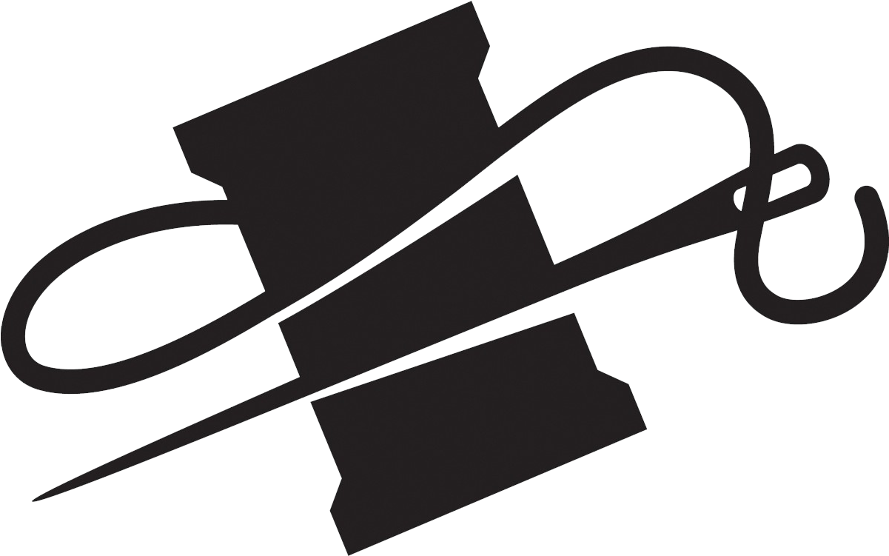

|  | Home | Sewing | Embroidery | Knitting | Gallery |
| Fiber art is a form of
artistic expression that uses fibers such as thread,yarn, fabric, and other textile materials,
to create functional or purely aesthetic works. This artistic medium blurs the boundaries
between fine art and craft, encompassing a wide variety of techniques including weaving,
knitting, crocheting, quilting, embroidery, felting, and more contemporary practices like
installation and mixed-media work. Fiber art has ancient roots, beginning with early civilizations using fibers for both practical and decorative purposes. Cultures like ancient Egypt and Peru crafted intricate textiles with symbolic meaning, while Asia developed advanced techniques such as silk weaving and ikat dyeing. During the Middle Ages, European tapestries blended functionality and storytelling, often depicting historical or religious themes. The Industrial Revolution mechanized textile production, but the Arts and Crafts Movement revived interest in handmade techniques. In the mid-20th century, artists like Anni Albers and Sheila Hicks elevated fiber art to fine art, challenging perceptions of textiles as mere craft. Fiber art encompasses a vast array of methods and materials. Traditional techniques include:
|
|
In recent years, fiber art has seen a resurgence in popularity, partly due to the DIY movement and renewed interest in sustainability. Contemporary fiber artists continue to experiment with scale, form, and material, ensuring the medium remains dynamic and relevant in the broader art world. Fiber art’s rich history and versatile nature make it a compelling and enduring form of artistic expression. From ancient weaving to modern installations, it tells stories, preserves traditions, and challenges conventions, making it a vital part of the global artistic landscape. |
|
This website includes descriptions and images detailing my personal experience and opinions in certain types of fiber art. Here, you’ll find insights into the techniques I’ve explored, stories about the inspiration behind specific projects, the challenges I’ve encountered, and the lessons learned along the way. Through curated photos and reflections, I aim to highlight the tactile beauty of fiber art and how it has enriched my creative journey. Whether you’re an experienced artist or simply curious about textiles, I hope my perspective inspires and informs.